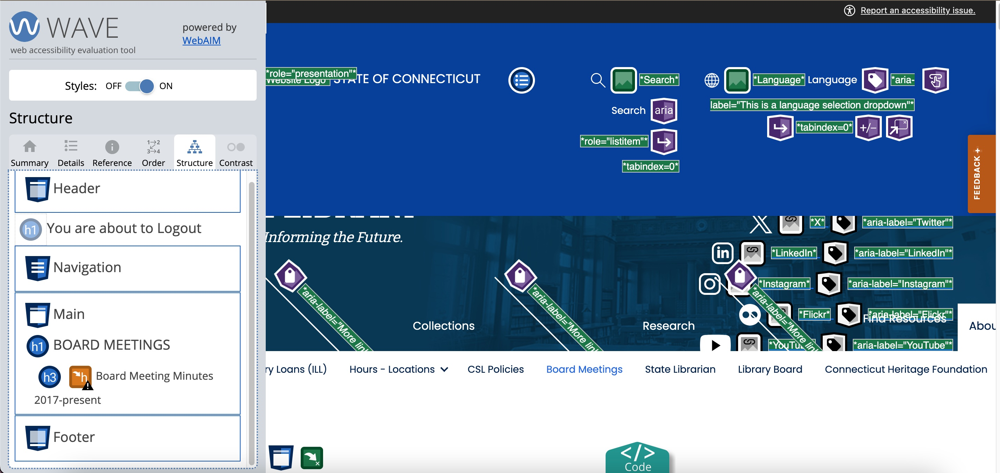

Name: Alexandra Johnson
Class Project: Accessibility Testing For Connecticut State Library
Website: Connecticut State Library
Date: May 5, 2024
The purpose of this report is to help identify possible website digital accessibility issues in order to prevent any access issues to this website via assistive technologies. The following accessibility checklist is based on the W3C WAI Easy Checks – A First Review of Web Accessibility I hope that you will find this report helpful and informative and find the recommendations to be actionable.
In the web page markup, the <title> is within the <head> tag. Good page titles are particularly important for orientation, they help people know where they are and move between pages open in their browser tab. The first thing screen readers say when the user goes to a different web page is the page title.
Results: 32 CSL pages were evaluated for clear, unique HTML page titles. Each page has descriptive HTML title values. The page titles were "front-loaded" with the important and unique identifying information first. Two pages with noticeable issues were the Third Thursday Video Presentations page and the Upcoming Events page. Neither of these page titles indicated that they were on the CSL website.
Image text alternatives ("alt text") (pictures, illustrations, charts, etc.) Text alternatives convey the purpose of an image, including pictures, illustrations, charts, etc. The alt attribute provides an alternative text for an image, if the user for some reason cannot view it. The reason can be a slow connection, an error with the image file, or if the user uses a screen reader.
Results: Images tested on the Homepage and Collections page had adequate alt text. However, a number of decorative icons tested on the Homepage, the Collections page, the State Nicknames page, and the Upcoming Events pages had unnecessary and redundant alt text. Images that do not convey content, are decorative, or contain content that is already conveyed in text should be given empty alternative text (alt="") or implemented as CSS backgrounds. On the Events page, the link that invites users to "Check out the schedule of events" links to an image for Hiking Thru History that has no accessible name, alt , or title. As this image conveys meaningful information, add HTML markup that will provide an accessible name (alternative text) for the image.
Results - Headings There are multiple h1 headers on most pages. I focused on the Find Resources page, Board Meeting page, and the Division of Library Development page. All 3 of these pages have an h1 titled "You are about to Logout", and all 3 pages also have a second h1 element. There should only be one h1 per page because screen readers expect only one h1 tag. Additionally, the Board Meeting page has a skipped heading that jumps from an h1 to an h6. Users navigating with assistive technology may be confused or experience difficulty navigating when heading levels are skipped. Skipped headings were noted on other pages, including the homepage. 
Results - Contrast Ratio I tested 11 pages, the majority of which had strong contrast ratios. Of the 11, the Board Meeting, CT LAB, and the Homepage did show multiple instances of very low contrast. It is recommended that you increase the contrast between the foreground (text) color and the background color.
Results - Resizing Text The CSL website scales up text size using keyboard commands very well. Text was increased to 200% and readability remained comprehensible on a desktop and iPhone.
Many people cannot use a mouse and rely on a keyboard to interact with web pages. Keyboard focus should be clearly visible and should follow a logical order through the page elements. Visible keyboard focus could be a border or highlight.
Results: I was able to effectively navigate the website and the drop down menus with the keyboard. The visual focus border was visible as it moved through the webpages.
label element with a for attribute that matches the value of the id attribute in the related control. For example:<label for="firstname">First name: </label>
<input type="text" name="firstname" id="firstname" />
id is unique within the web page.Results I tested the Email Us page because it has a form. Using only the keyboard, I was able to go to each form field and press submit. However, the Email Us page has a web form that has more than one label[for=input_3] associated with the element [id=input_3] and more than one label[for=input_4_full] associated with the element [id=input_4_full]. Furthermore, neither of these labels or ids match the content of the box they are attached to.
Moving, Flashing, or Blinking Content: Moving, flashing, or blinking content includes carousels (example carousel), ads, videos, auto-updating stock tickers, scrolling news feeds, and more. Users need to be able to control moving content, especially some people with attention deficit disorder or visual processing disorders.
Results: 15 pages were checked and none of these elements were present.
Multimedia (video, audio) closed captions and transcripts
Results: 20 videos on the Third Thursday Video Presentations page were checked for CC and transcripts. No transcript is provided for any of the 20 videos and only 6 of the videos provided automatic CC. Automatic captions are not sufficient for accessibility because they are not accurate enough. It is best practice to provide both captions and downloadable transcripts.
Basic Structure Check: It helps you understand how some people "see" the web page differently. For this basic structure check, you look at the web page without images, styles, and layout. Web pages are often designed with multiple columns, sections, colors, and other visual aspects that help organize information for people who see the page in its default display. However, some people do not see the page this way.
Results: For this test, I used WAVE to remove all CSS styles in order to see the CSL website without any visual styling. The collections page had pretty strong structure, but a few of the other pages examined, including the Sate Agency Profiles page had poor structure due to the lack of headings for blocks of information and no table headings for the State Agency ProfileIndex table. When navigation, main content, and other sections have good headings, it's easier for people to find their way around the information
Thank you for taking the time to review my findings. I believe that most of the issues mentioned here can be resolved. Included below are some helpful articles on web accessibility.